Git GitHub VSCode errors and Useful Suggestions
Git: gpg: skipped <email>: No Secret Key
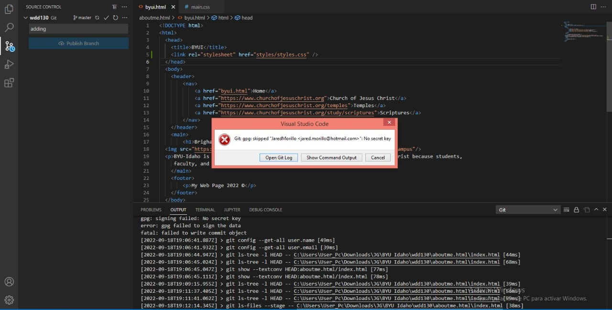This has to do with how Git is configured with GPG signing process. This is an issue on Windows computers, as the GPG implementation is weird.
There are a few potential ways to fix this issue. I would recommend turning off the signing with GPG.
Here are the steps to disable this option
Go to VSCode preferences - Settings
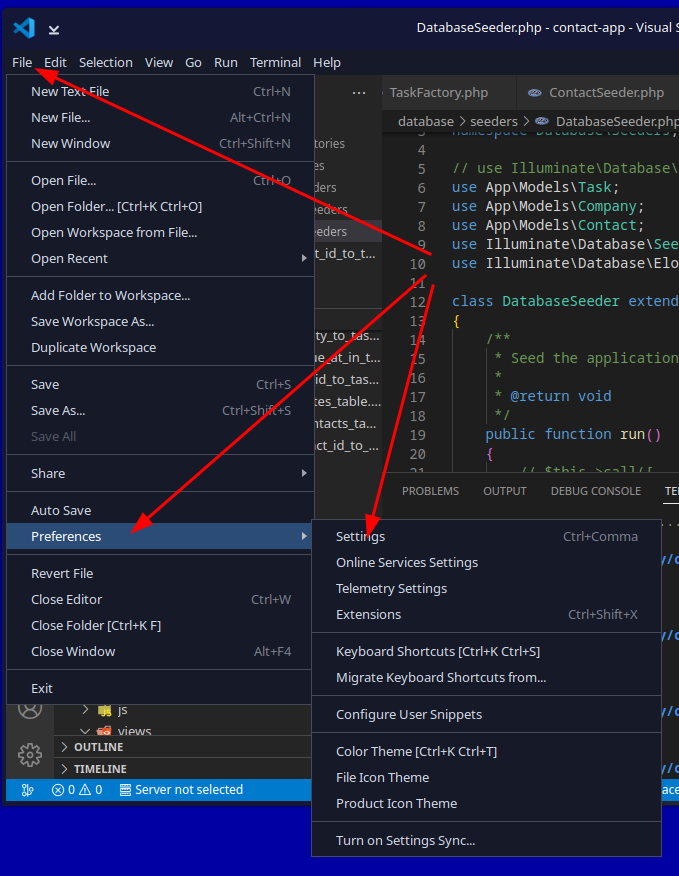Type this into the search bar at the top to find the setting: gpg commit
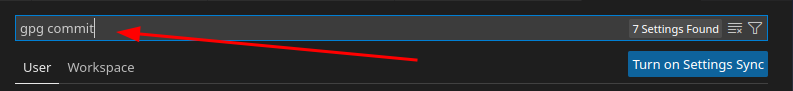Make sure this option is not checked. This is the option that tells VSCode to use PGP while pushing to GitHub: Enables commit signing with GPG or X.509
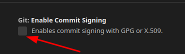Close out of the Settings tab.
You don't have permission to push to <GitHub Account> on GitHub
This error occurs when you have GitHub setup on one account and you try to use another account and GitHub auto logs you into the old account with VSCode.
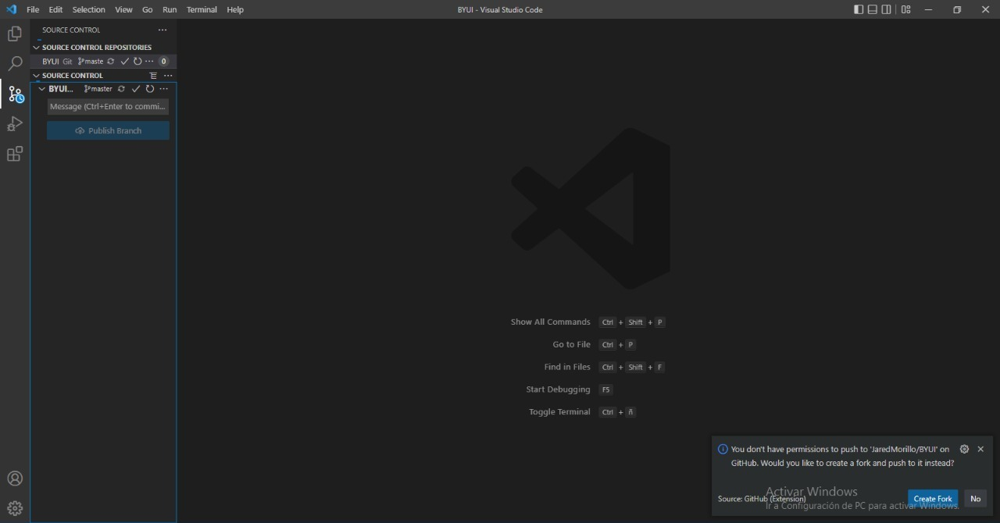This error is because Git was previously configured for another user account on the computer using the global settings. There are a a few solutions.
Potentially Destructive and Permanent method
Only use this method if the computer was used by someone else and now a new person is using the computer and both people are available to do this. This is also a method to reset or reconfigure the user on the same computer due to corruption.
Go to GitHub and log into the old account and click on the user profile picture in the top right of the web page.
On the left navigation menu, select
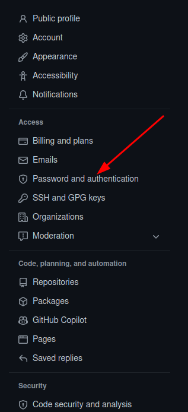Then click on the tab
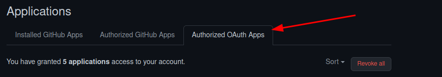Find teh GitHub for VSCode line
Click on the to the left of GitHub for VSCode
Click the option
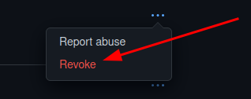This will force VSCode to re-authenticate with GitHub.
If this is not a possibility and you must have two GitHub accounts with VSCode You have to go through an elaborate setup with an extensions and that is listed below.
There are other authentication methods, but they are much more complex to setup and require installation of additional software to create SSH keys for unique encryption process and authentication.
Preferred Method
Make sure each student is using a different system Account to log into the computer. This is not always possible, but the preferred method and easiest. Some families do not allow this, one reason is so people do not have the temptation of going to inappropriate sites because everyone else in the family will see where they went.
This web page explains the various locations that the config files may be found in Windows: On Web Security. The first command on this page
git config --list –show-origin
will show you where the config files are located. If you run this in a folder that is part of a repository you will see the global and repository locations. If run outside of a repository, it will show only the global config.
Windows: The reason for the different Profiles/Accounts on the computer is that git should store the config for that profile in a hidden file in the %USERPROFILE%\.gitconfig file. The %userprofile% is usually in the c:\users\username folder depending on who is logged in. This does not always work as the location of the .config file may be found in a shared area of the system. That is why you should run the command above to see where the global config is located.
Mac / Linuxsystem stores the file in the HOME folder for the user by default in a hidden file called .gitconfig and is much more reliable than Windows for the location.
Manual method
Do not use the git config --global command. The student must set the username and email for each repository. To do this they will have to edit the .git/config file for each repository and add the correct entries or run the git config commands in the repository directory after the git init command and do not use the global option.
git config --global user.email "email"
git config --global user.name "github username"
That will set the username and email address per repository in each .git/config file.
Use VSCode Extension
Install a VSCode extension that will do this for you: “Git Config User Profiles” Here is a link to the description of the extension Git Config User Profiles
This extension does the configuring of the username and email address in each repository for you or will change the global config setting for each person that you switch too.
GitHub Pages does not initialize
There is an issue where the GitHub pages do not initialize the first time. This means you must re-initialize a push to GitHub and then recreate the pages setup.
-
Go to the pages setup page and change the branch to NONE
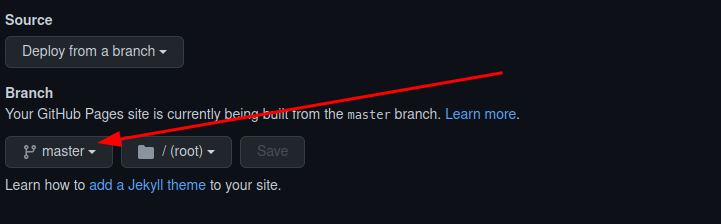Click Save
-
Go to VSCode and push to GitHub
You can do an empty push by typing the following commands in the command prompt
git commit --allow-empty -m "Trigger rebuild"
git push -
Go back to GitHub Pages and recreate the pages setup.
Once you have clicked save on the pages setup, click on the tab
Watch the top entry until the icon to the left turns blue or green with a check mark. That means it is complete. The red circle with an X means that it failed.
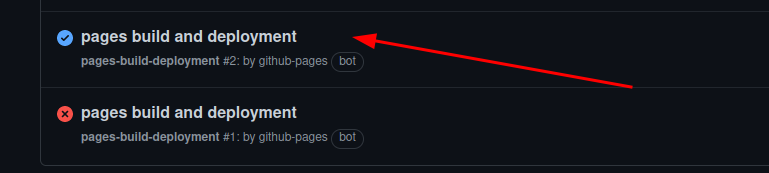You will notice that the process will take longer than 1 minute. This is due to some change GitHub has made on the server due to new features that are being added. Even publishing the push/sync from VSCode takes as long as 5 min on very busy days.
If the user gets a failed again, check the spelling of the folders and file names. This process seems to fail if the user has spaces in the folder and filenames and sometimes if there are underscores in these names.
Make sure to configure your 'user.name' and 'user.email' in git
If the user gets this error, they missed that step in the configuration of Git. It is found in the installation steps of Git for Windows.
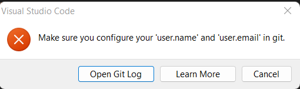Open the terminal or command prompt. This can be the one inside VSCode
Type each of these commands
git config −global user.name 'github user name'
git config −global user.email 'email address used on github'
Try to push to GitHub
If you still have issues, then contact someone for help
VSCode push/sync to GitHub seems to hang and not do anything
There are a few reasons as to why this will occur. There are a couple of things to try.
-
Open a terminal/command window and try to push to GitHub using the command line
git push
You may get an error that says something like this (It will look different on the various OS's):
There is no tracking information for the current branch.
Please specify which branch you want to merge with.
See git-pull(1) for details
git push <remote> <branch>
If you wish to set tracking information for this branch you can do so with:
git push --set-upstream origin masterIf you get that error at the command line type in the command
git push −set-upstream origin master
Then do a git push command
You may be prompted to authenticate with GitHub again.
Once the push/sync is complete, you will need to restart VSCode and the GitHub controls within VSCode should work again.
- The other reasons why this process will hang are too numerous and hard to give instructions on how to overcome in this document. This will require more research with debug logs to see if there is a reason for the hang.
Windows Error message: App or process blocked: git.exe
User is trying to run git commands at the command prompt and Windows is displaying the following Windows System error
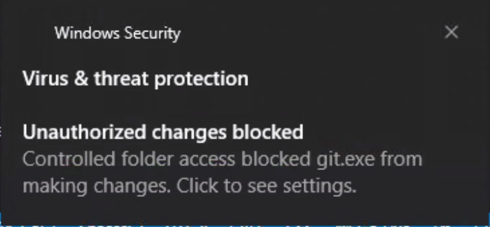The instructions to fix this are specific to the version of Windows that is being run. Here are the basic steps: https://support.microsoft.com/en-us/windows/allow-an-app-to-access-controlled-folders-b5b6627a-b008-2ca2-7931-7e51e912b034
Use controlled folder access
Controlled folder access in Windows Security reviews the apps that can make changes to files in protected folders and block unauthorized or unsafe apps from accessing or changing files in those folders.
- Select Start> Settings> Update & Security> Windows Security> Virus & threat protection.
- Under Virus & threat protection settings, select Manage settings .
- Under Controlled folder access , select Manage Controlled folder access .
- Switch the Controlled folder access setting to On or Off .
There is an option to allow just one program to run in this Controlled Folder Access and you can select git.exe from the recently blocked programs.
If you look at the Windows Notifications, you may see an error like this.
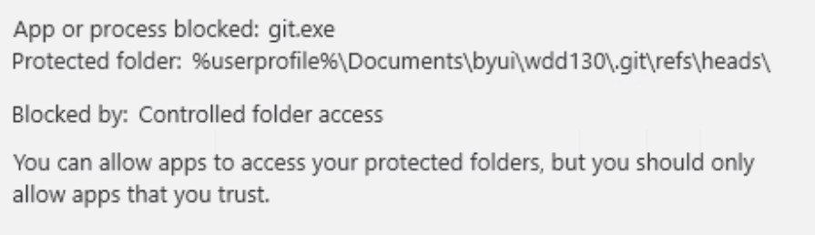This is the same step as above for the same error. Microsoft has a few diverse ways to present this message. It will also be logged in to the System Logs.
git RPC fail: curl 18 transfer closed with outstanding read data remaining
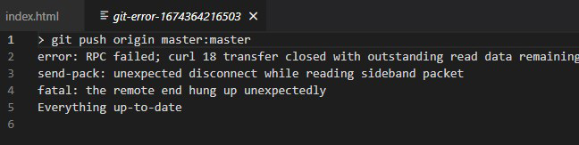A few reasons I have seen this curl 18 error:
- Too many files - This is usually related to #3
- Anti-virus software
- Number of files and sizes exceeds the buffer size for git. See this article: https://9to5answer.com/git-push-gives-error-rpc-failed-curl-18-transfer-closed-with-outstanding-read-data-remaining
- Speed of internet can also cause this issue. https://debugah.com/git-clone-error-rpc-failed-curl-18-transfer-closed-with-outstanding-read-data-remaining-18415/
- Running Homebrew on a MAC or Linux machine. There are known issues at times with this error in Homebrew. Homebrew is not supported for students and they will have to find the answers on their own as Homebrew has its own command strcuture to work with Git & GitHub.
git RPC failed; curl 92 HTTP/2 stream 0 was not closed cleanly: CANCEL (err 8)
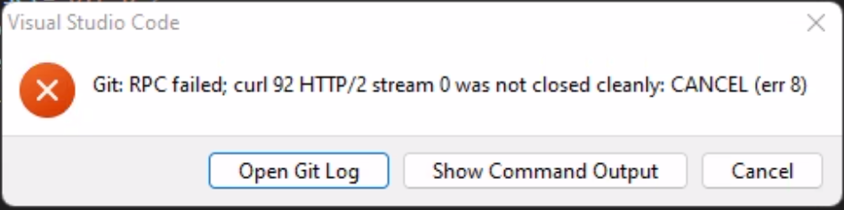This error has to do with the amount of data being sent to GitHub. On bad internet connections, you can only send enough data that GitHub will keep the connection open. Bad internet connections will drop with this error. There are other reasons this error can occur, but this is the only reason for this error with the data we use.
Git does not allow you to add a folder to the repo
If you type the git add <foldername> and get an error that looks like this
Git Error - 'main/' does not have a commit checked out
The issue is mot likely that the folder has been initialized as a git repository. Go into that folder and look for the hidden folder/directory called .git
Remove the .git folder in the sub-directory
Error: Failed to push some refs to…
Updates were rejected because the tip of your current branch is behind its remote counterpart. Integrate the remote change (e.g. 'git pull …') before pushing again.
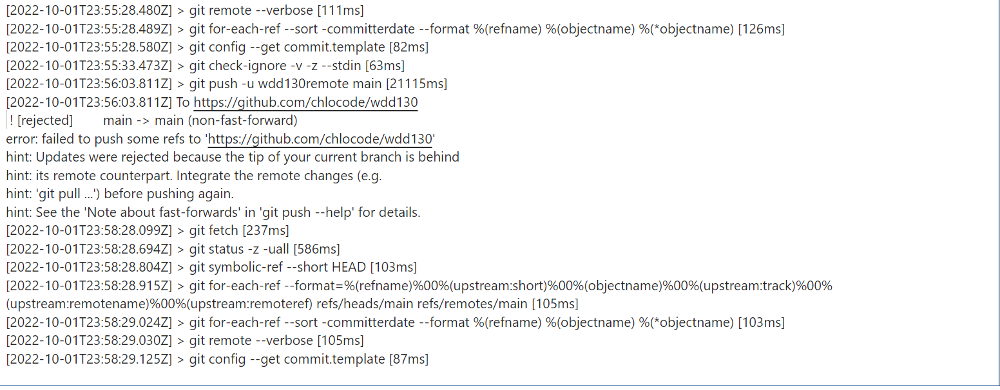The reason for this error is that the code on GitHub was edited and the user did not issue a git pull command before making any changes to their local machine before they started to edit on the local machine.
To fix this error there are a few options.
- The first and usually the easiest for those new to Git/GitHub is to recreate the repository. You have to unpublish the site, delete the repository, delete the .git folder on the local and then push back to a Public Repository on GitHub.
-
The preferred way is to stash the changes, pull from the server, merge your stashed changes into the update from the server and then push back to the server.
Run these commands:
git stash
git pull
git stash pop <− This will apply your saved changes
git commit -m “message”
git push
git stash clear <− This will remove the stashed files from memory. Stashed files stay until removed.
- You can try and issue a 'git push -f' command at the command line and see it will go through. This is still not a guarantee that it will push.
-
You can create a new branch and push to the new brach. You can then go to the fork and use the built in process on GitHub to validate the change in the fork and merge back to the master/main branch. (This is the way most companies do development)
Create a new branch in VSCode
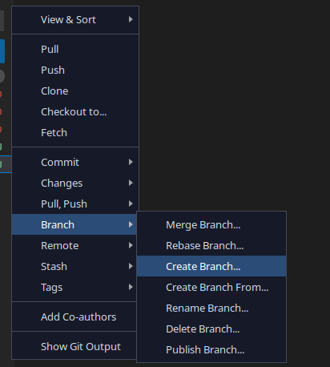Give the branch a new name
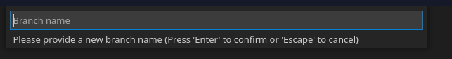Commit and push the new branch
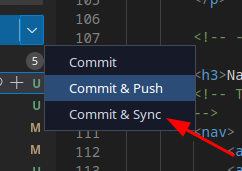Open GitHub repository
You should see a message like this
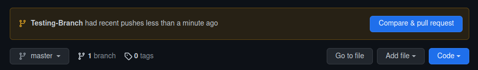Click the Compare & Pull Request button
You will see a screen like this
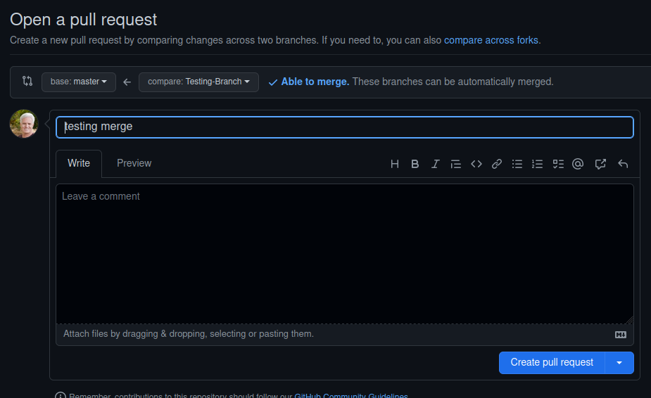You can type a comment in box where it says Leave a Comment.
Click the Create pull request button
Hopefully you will see this message
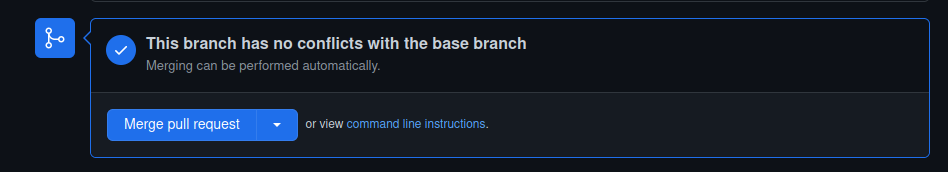If you see a message that state there is a conflict, you will have to fix the conflict using one of the options suggested.
Once the conflict is resolved and you get this message, click the Merge pull Request button
You will then be asked to confirm the merge
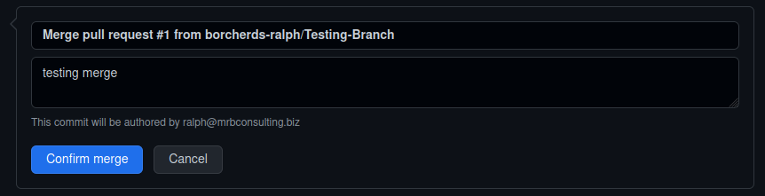Click the Confirm Merge button
Once the merge is successful you will see this message. Go ahead and delete the branch by clicking the Delete Branch button
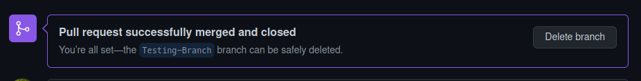If you do not delete the branch you will always push to this branch from VSCode by default now.
Go back to VSCode
change back to the master branch by using the Checkout To option
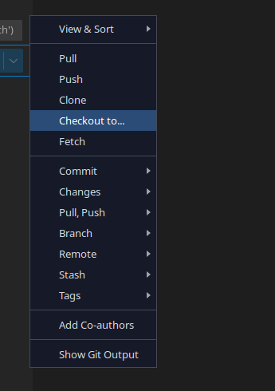Select the Main/Master branch. Go by the name and not the number.
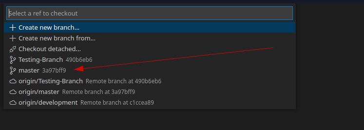To remove the local branch open the command prompted
Run this git command at the command prompt
git pull −prune
You will see something like this if it works
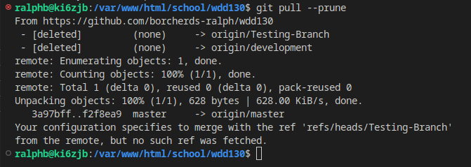git branch −d <branch name>
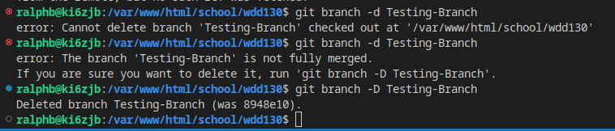This screenshot shows what happens if you have not switched to the main/master branch first and the branch has not been fully merged. These entries are denoted with the red dot to the left of the command that was run.
You must CHECKOUT the main/master branch first
You can force the delete by using the -D option. Lowercase −d for the check and uppercase −D to force the delete.
You should now only have the one branch on your local computer. This is the preferred option for most classes at school. YOu will have multiple branches if you are working as a group on a single project.
User is prompted git-credential-manager-core.exe could not be started
User gets this prompt every time they go to sync with GitHub
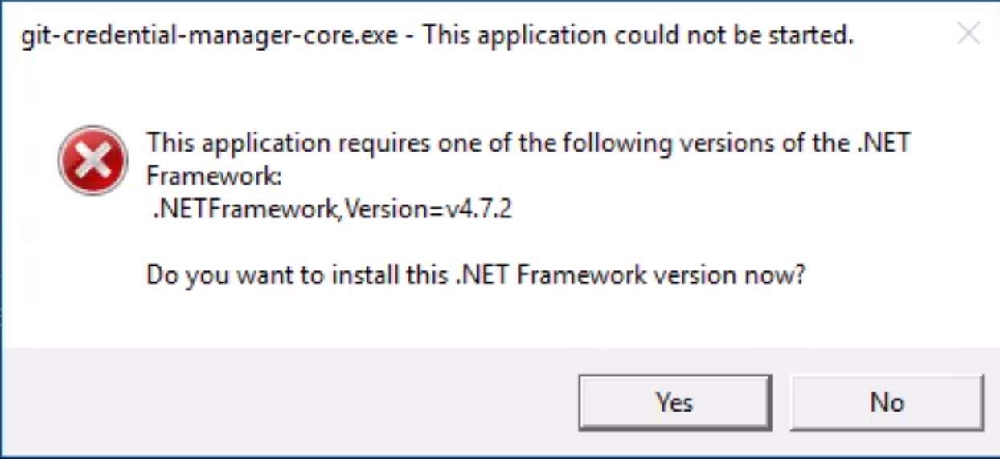You have to install Microsoft .Net 4.7.2 to get rid of this prompt and to have Git remember your GitHub credentials.
If internet connectivity is an issue, then use this URL to go directly to the download page and download the off-line installer. Install the software, reboot the computer and try to sync with Github.
You should not be prompted for this again. If you do then the install did not work correctly.
If you get the following message
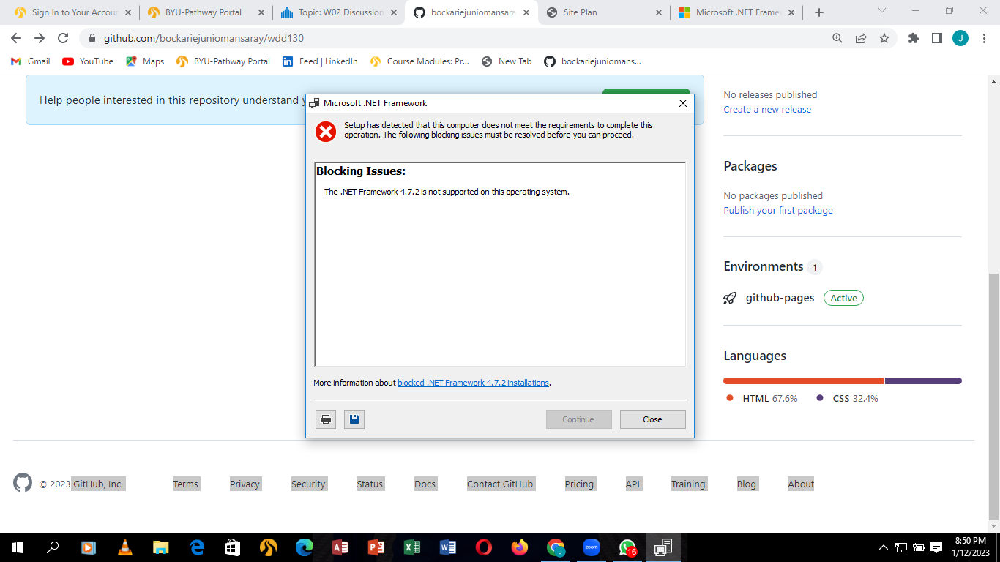You must update Windows to at least Windows 10 version 1607. You can tell which version you have boy going to the About option in the Windows Settings.
This post on Microsoft Support site shows you how to find which version of Windows you are running. Find operating system info in Windows 10
MacOS error: xcrun: error: invalid active developer path
Error when running git --version on MAC
When running the "git --version" or "git version" on a Mac, you may encounter this error:
xcrun: error: invalid active developer path (/Library/Developer/CommandLineTools), missing xcrun at: /Library/Developer/CommandLineTools/usr/bin/xcrun
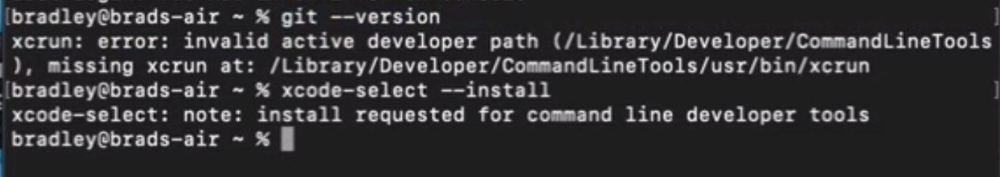To fix this error you must run the following command in a terminal window on the Mac.
xcode-select --install
The other way to install these tools is to goto the Apple Developer software page and install from there: https://developer.apple.com/download/more/
Look for the: "Command Line Tools for Xcode" with the version number that matches your OS version number and does not contain the word 'BETA' as part of the filename. It will look something like this screenshot.
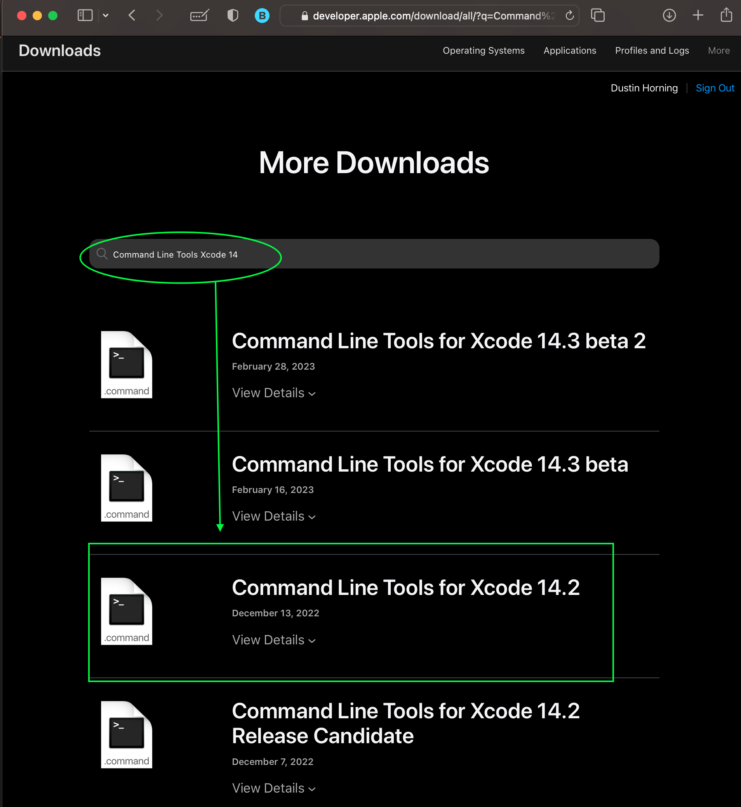Once the software has been installed make sure to restart the VSCode application by clicking on the menu and select QUIT, (-q)
Git LoadLibraryExW() failed with" The specified procedure could not be found.?
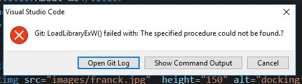If you open the Show Command Output you will see the following error: git failed to load library libcurl-4.dll
To resolve this error, you must find the libcurl-4.dll file on the system and make a copy of it to the C:\Program Files\Git\bin\ folder
for some reason even though Windows generally has the folder that this file can be found in the Path Environmental settings, Git does not always see it and cannot load it.
Most Windows systems has this file located in C:\Windows and this folder is part of the Path setting on Windows computers.
These are suggestions and hints
User is prompted to configure formatter
User is prompted to configure formatter
If the user installs the Prettier extension, which is not needed, the first time they go to format the code, they will be prompted to select a formatter for that type of file type (HTML or CSS). VSCode as a code formatter built into the editor that works well with HTML, CSS, JavaScript, and PHP.
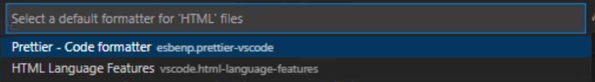One of the issues with the Prettier formatter is that is closes null tags. What this means is that tags such as the img tag will be closed with /> at the end. This is XHTML syntax and not part of HTML5 standards.
Prettier is what is knows as an Opinionated Formatter. It is opinionated in that the creators of it are stating what they believe is the best way to format something even if it goes against the standards or not explicitly stated that this is the way it must be done. They do not give you the option to turn that off. VSCode setting does give you that option.
Users with multiple coding projects/classes
It is recommended that if you are doing multiple coding projects at a time and each has its own folder/directory structure, you install an extension called Project Manager
Go to extensions
Search for Project Manager
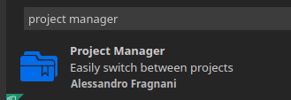Click Install.
Once installed open one project folder in VSCode
Click on the Project Manager icon in the icons on the left or right of the editor
You should see a blue button that states: Project Manager: Save Project - Click that button and you will be prompted for a name at the top center of the screen. The default name is the folder name.
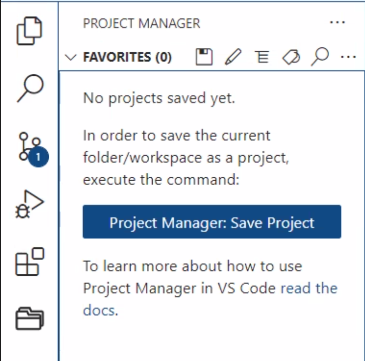You will be prompted to give the project a name
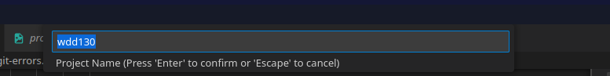That will then add that project name to the Project Manager list of projects.
Open the second project folder in its own workspace.
Click the Save icon in the Project Manager folder icon area.
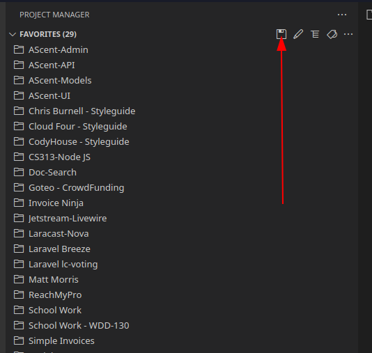Give your project a name and hit enter. This will add it to the list.
If you click the edit icon, it will open the JSON file that lists your projects. The format is quite easy to follow. The rule is that each project must be enclosed with { } and must have a comma between the project section.
- Name is the name of the project
- Rootpath is the path to the project.
- Paths is not used at this time
- Tags is a way to categorize the type of project for sorting. This list is up to the person
- Enabled is if the project will display or not in the list of projects. This is a way to only show projects you are currently working on.
This is the format of the JSON File
{
"name": "WDD-130",
"rootPath": "/var/www/html/school/wdd130",
"paths": [],
"tags": ["School", "WDD-130"],
"enabled": true
},
Pushing to GitHub using fewer steps
When you are on the Git tab in VSCode, the button to Commit and Sync may state Commit only. If you click on the down arrow to the right of the button and select Commit & Sync
If this is the first time you are doing that you should see the following messages. On the first dialog, click the Always button
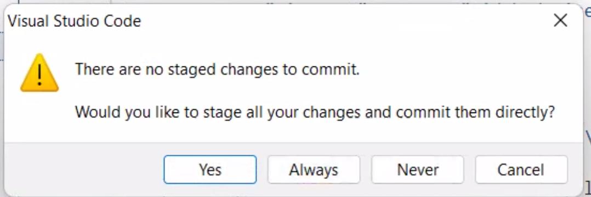On this next dialog if you get prompted, click the OK, Don't Show Again button
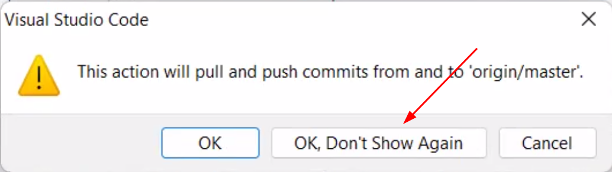Sometimes these will prompt the second time you click on the Commit & Sync option.
You can change your Commit button to Say Commit & Sync by doing the following
- Go to the VSCode Settings
- In the search bar search for Git: Post Commit Command 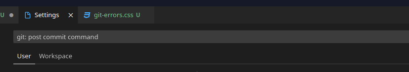
- Change the option on that command to be sync 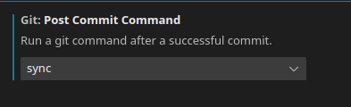
This will make it possible for you to click the button once and commit and sync at the same time. Just click this button and both steps are executed in order.
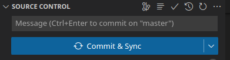How to add more than 50 characters to a Git commit
The default maximum length for a git commit message is 50 characters
There is a way to add more details to the commit so that you can see what you did in a lot more detail without having to look at the code changes directly.
In VSCode, do not type a message before you hit the commit/commit & sync button
By doing this you will get prompted with a screen in the code editor for the commit message like this
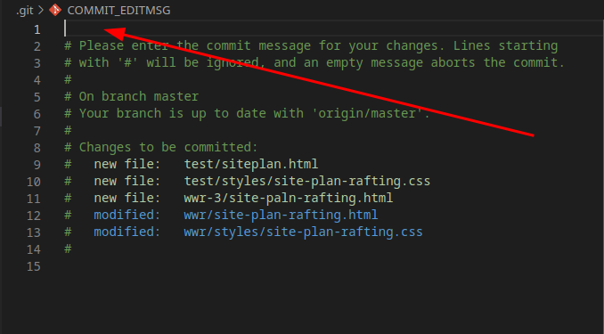The way you use this to type in your 50 character or less comment in the first line
Go to the line below the last # (hashtag/pound symbol) and then type in the longer message you want to give. There is not limit to how long this message can be.
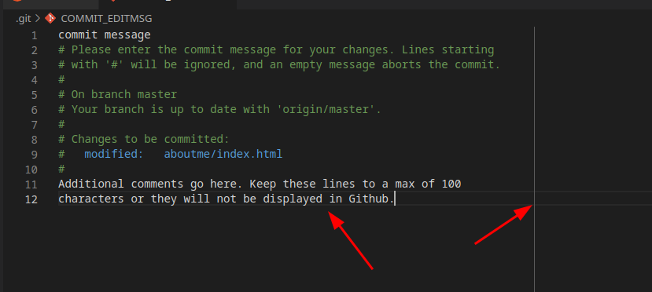To see this message on GitHub do the following.
-
Open Github and click on the commits link
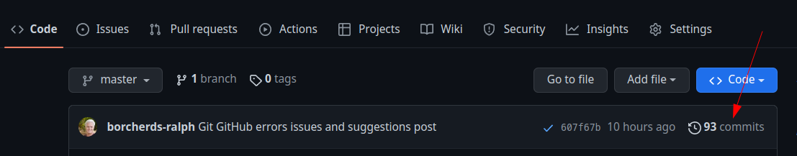 -
If there is an extra detail comment on the commit you will see this little icon of 3 dots
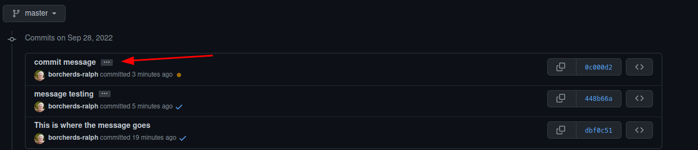 -
Click on those 3 dots and the extra message you typed will be displayed
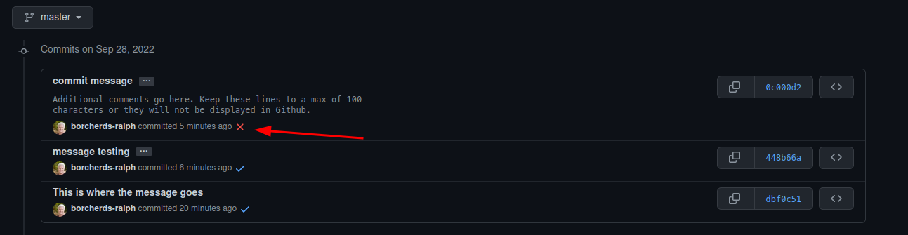
It is that simple.
Adding a description to your repository
One of the things you will see in a lot of repositories is a description of what the repository is all about, how to install and use the code, etc.
This is all done using Markdown text. This will show you the details of how to use that so you can describe wheat you repository is all about.
First you need to create a file in the top level folder called README.md. It must be capitalized for GuitHub to recognize it as the description file for the repository
Teh following information comes from the Markdown Guide website basic syntax page.
The basic syntax is as follows:
| Markdown | HTML | Rendered Output |
|---|---|---|
# Heading level 1
|
<h1>Heading level 1</h1>
|
Heading level 1 |
## Heading level 2
|
<h2>Heading level 2</h2>
|
Heading level 2 |
### Heading level 3
|
<h3>Heading level 3</h3>
|
Heading level 3 |
#### Heading level 4
|
<h4>Heading level 4</h4>
|
Heading level 4 |
##### Heading level 5
|
<h5>Heading level 5</h5>
|
Heading level 5 |
###### Heading level 6
|
<h6>Heading level 6</h6>
|
Heading level 6 |
This is regular paragraph text
|
<p>This is regular paragraph text</p>
|
This is regular paragraph text |
Heading Best Practices
Markdown applications don't agree on how to handle a
missing space between the number signs ( # ) and the
heading name. For compatibility, always put a space between the
number signs and the heading name.
| ✅ Do this | ❌ Don't do this |
|---|---|
# Here's a Heading
|
#Here's a Heading
|
You should also put blank lines before and after a heading for compatibility.
| ✅ Do this | ❌ Don't do this |
|---|---|
Try to put a blank line before...
|
Without blank lines, this might not look right.
|
Paragraphs
To create paragraphs, use a blank line to separate one or more lines of text.
| Markdown | HTML | Rendered Output |
|---|---|---|
I really like using Markdown.
|
<p>I really like using Markdown.</p>
|
I really like using Markdown. I think I'll use it to format all of my documents from now on. |
Paragraph Best Practices
Unless the paragraph is in a list , don't indent paragraphs with spaces or tabs.
| ✅ Do this | ❌ Don't do this |
|---|---|
Don't put tabs or spaces in front of your paragraphs.
|
This can result in unexpected
formatting problems.
|
How to share a computer to commit to GitHub using different accounts
This process is quite easy. Go to the command prompt/terminal for the root of the project. Then type these commands.
You will notice that you have already typed these commands with the global option. These commands sets these for the specific repository only.
git config user.email "email"
git config user.name "github username"